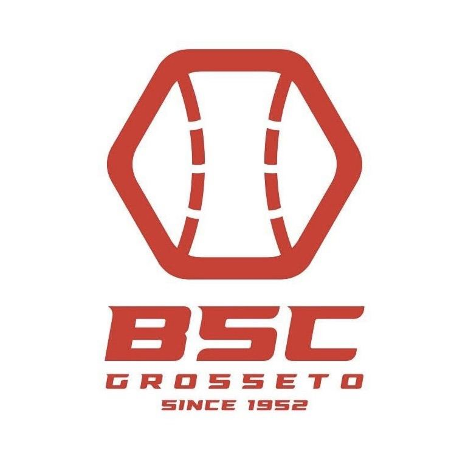

Un’importante collaborazione è stata annunciata tra il Lancers BC e il BSC Grosseto, due realtà importanti del baseball italiano, che ha come obiettivo principale la valorizzazione e la crescita dei giovani talenti under 18. La partnership, sottoscritta alla presenza del presidente del BSC Grosseto, Pugliese, prevede che i giovani atleti provenienti dalla società maremmana vengano integrati nella rosa del Lancers BC, in linea con le nuove disposizioni del regolamento della Serie B.

Con il recente aggiornamento delle normative della Serie B, ogni squadra è obbligata a schierare almeno un giocatore under 18 per tutta la durata dell’incontro. Questo regolamento mira a incentivare l’inclusione dei giovani nel panorama competitivo del baseball italiano, promuovendo la formazione e l’educazione dei talenti futuri. Da qui nasce l’accordo tra il Lancers BC e il BSC Grosseto, che si propone di rispondere a questa esigenza, dando ai ragazzi l’opportunità di confrontarsi con il livello più alto del campionato.
Il presidente del BSC Grosseto, Pugliese, ha sottolineato l’importanza di questa collaborazione, definendola “un’occasione unica per i nostri giovani atleti di crescere in un ambiente stimolante e competitivo. Con il Lancers BC, i ragazzi avranno la possibilità di svilupparsi sotto la guida di tecnici esperti, accumulando esperienza sul campo e preparando il loro futuro nel baseball nazionale.”
I giovani atleti selezionati dal BSC Grosseto avranno così l’opportunità di giocare nella Serie B con il Lancers BC, migliorando le loro abilità tecniche e tattiche in un contesto che favorisce la loro crescita personale e sportiva. Questa sinergia non solo aiuterà a formare nuovi giocatori di qualità, ma contribuirà anche a rafforzare la competitività del campionato di Serie B, sempre più focalizzato sullo sviluppo del settore giovanile.
La collaborazione rappresenta un passo importante nella strategia di entrambe le società di investire nei giovani, preparando le future generazioni a competere con i migliori. Con questa iniziativa, il Lancers BC e il BSC Grosseto dimostrano ancora una volta il loro impegno per la crescita del baseball in Italia, valorizzando i talenti e promuovendo un progetto sportivo a lungo termine.